Trial 11 — learning a steel's behaviour from camera-measured strain maps
15 November 2026 · Phase 2, track E · real test data from Sandia National Laboratories (304L stainless sheet)
Short answer. Yes, it generalised: on the unseen shapes all 12 of 12 pass marks set in advance were met, by a wide margin, and an independent solver agrees. But the plain tension test, fitted in seconds, also passed all 12. The camera data bought one real thing — better strain maps (error 6.6 % → 3.9 % on the unseen plate) by revealing that the steel deforms a little differently in different directions — and nothing for the force, which the tension-test model predicted slightly better.
The test pieces
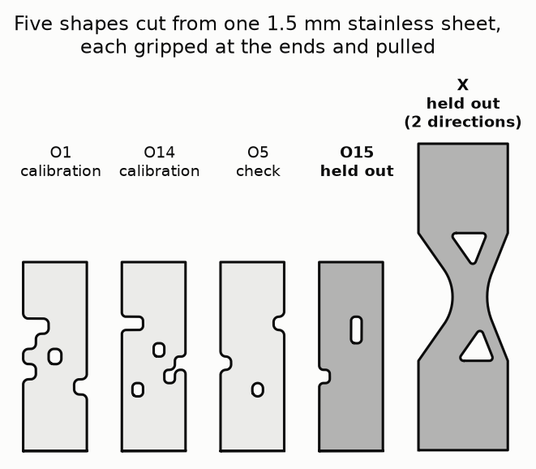
Notches and holes force the metal to stretch unevenly, so one test exercises many stress states at once. Two shapes were used to learn the material, one to choose between model forms, and two were locked away. The X-shape was tested twice: cut across the sheet's rolling direction like all the others, and cut along it.
- Data. Jones et al., Scientific Data 11:1101 (2024), doi:10.1038/s41597-024-03949-y; files from Figshare+ (doi:10.25452/figshare.plus.25483534, CC0, no login). Only the slow tests (about 1.5 hours each, no self-heating) were used.
- Split, fixed before any fitting. Learn from plates O1 and O14 · check model choices on O5 · held out: O15 and the X-specimen. The held-out files were opened once, at 19:06:13 UTC, after the models were frozen.
- Two ways to calibrate. Full-field model: a simulation of each calibration plate is adjusted until its strain maps and force match the measurements. Tension-test model: the same hardening formula fitted to three plain tension tests only.
Warm-up: does the method recover a known answer?
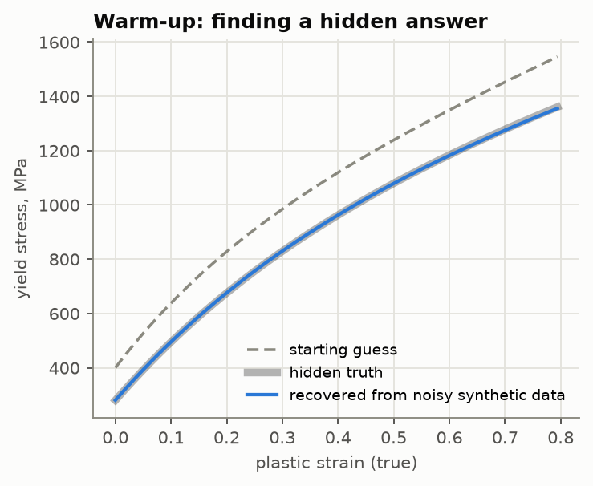
Synthetic strain maps were made with a hidden material on a fine mesh, camera-like noise was added, and the method had to find the material again on a different, coarser mesh from a starting guess 30–60 % off.
| Check | Allowed | Result |
|---|---|---|
| Hardening curve recovered | within 2 % | 0.15 % pass |
| Direction-dependence numbers a, h, c | 0.05 / 0.05 / 0.3 | +0.005 / +0.0014 / -0.0006 pass |
| Second starting guess reaches the same answer | — | identical to 8 digits pass |
| Computed gradients vs finite differences | 1e-5 | 1.1e-6 pass |
What was identified
| Model form | Fit to calibration plates (lower is better) | Force error on check plate | Strain map error on check plate | Selection score |
|---|---|---|---|---|
| M1: isotropic, simple hardening (3 numbers) | 1.987 | 0.67 % | 8.3 % | 0.687 |
| M2: isotropic, hardening + straight-line term (4) | 1.903 | 0.56 % | 7.7 % | 0.628 |
| M3: isotropic, two-part hardening (6) | 1.894 | 0.53 % | 7.8 % | 0.624 |
| M4: direction-dependent (Hill), as M2 (7) chosen | 1.310 | 0.49 % | 4.7 % | 0.411 |
| M4b: direction-dependent, two-part hardening (9) | 1.299 | 0.46 % | 4.7 % | 0.407 |
Five model forms were fitted to the two calibration plates and compared on the check plate O5 only. The rule fixed in advance — the simplest form within 10 % of the best score — picks M4. Allowing the steel to behave differently along and across the sheet (the "Hill" forms) is what cuts the strain-map error from about 8 % to about 5 %; extra hardening terms add nothing.
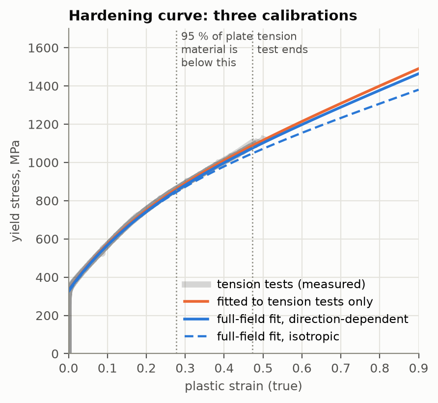
Once direction-dependence is allowed, the hardening curve learned from the plates (solid blue) lands almost on the curve from the plain tension tests (orange). The isotropic full-field fit (dashed) bends its curve to make up for the missing direction-dependence. Chosen model: initial yield 331 MPa, Voce 380 MPa at rate 5.14, linear slope 842 MPa; Hill a = 1.073, h = 0.446, c = 2.93 (isotropic would be 1, 0.5, 3).
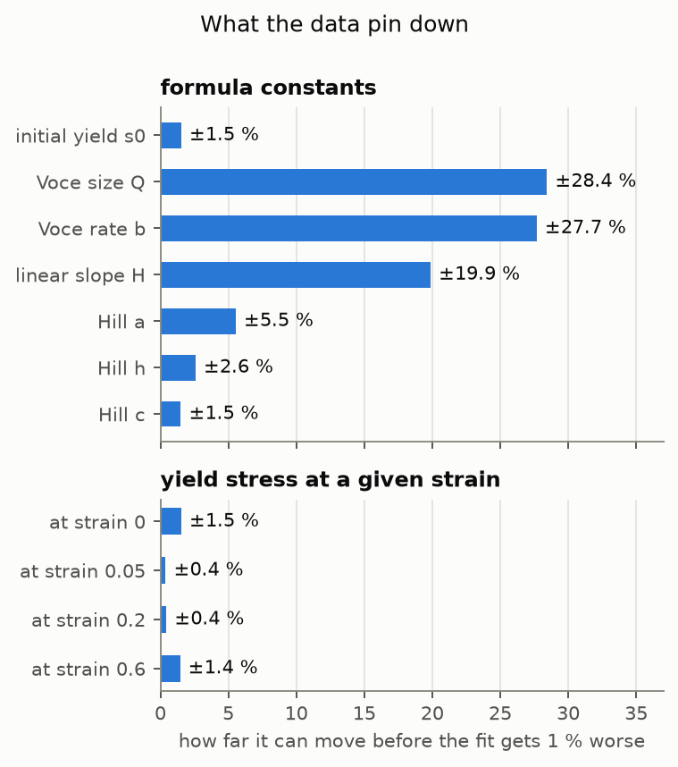
Which numbers the data really fix. The yield stress at any given strain is pinned to about ±2 % or better, and so are the direction-dependence numbers (±1.5–5.5 %). The individual constants of the hardening formula are not: Q, b and H can each move by 20–28 % if the others compensate. Different starting guesses still end at the same point (three starts for M4, identical to four digits).
Predicting the shapes it never saw

Plate O15 (slot + notch)
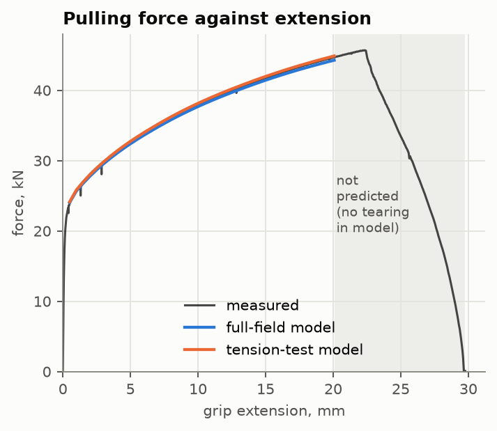
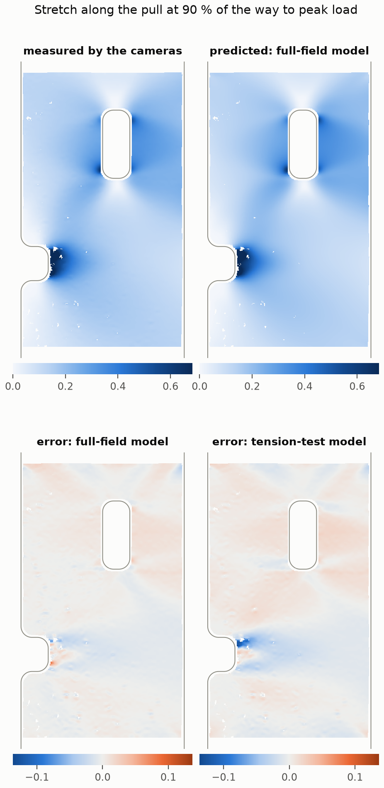
| Check | Allowed | Full-field model | Tension-test model | No plasticity at all |
|---|---|---|---|---|
| Force curve, average error | ≤ 5 % | 0.7 % pass | 0.5 % pass | — |
| Force at 90 % of the way to peak load | ±5 % | -1.0 % pass | +0.4 % pass | — |
| Strain map error at 30 % | ≤ 15 % | 4.0 % pass | 6.7 % pass | 39 % |
| Strain map error at 60 % | ≤ 15 % | 3.8 % pass | 6.5 % pass | 32 % |
| Strain map error at 90 % | ≤ 15 % | 3.8 % pass | 6.6 % pass | 31 % |
| Peak (hot-spot) strain | ±15 % | +0.8 % pass | -3.0 % pass | -47 % |
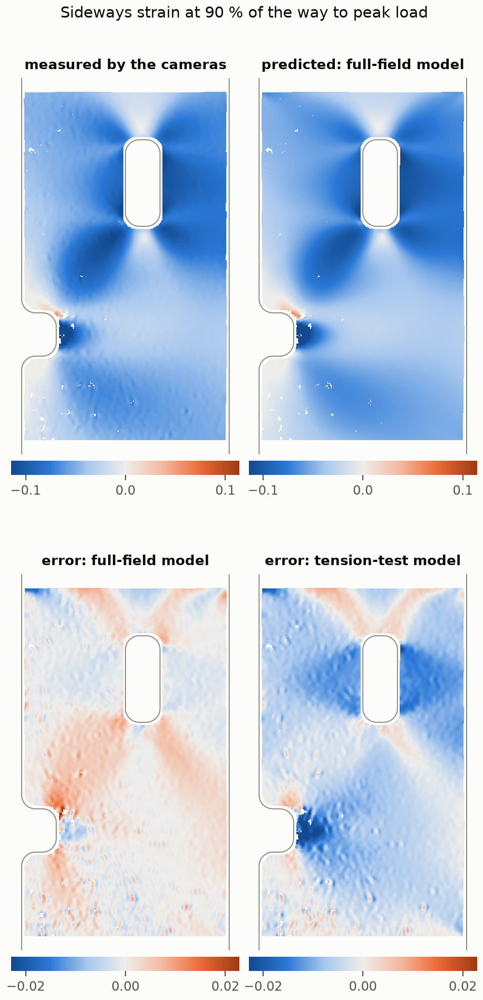
The sideways strain shows what the camera data added: the tension-test model (right) shrinks the plate sideways too much almost everywhere; the full-field model does not.
X-specimen, same direction as calibration
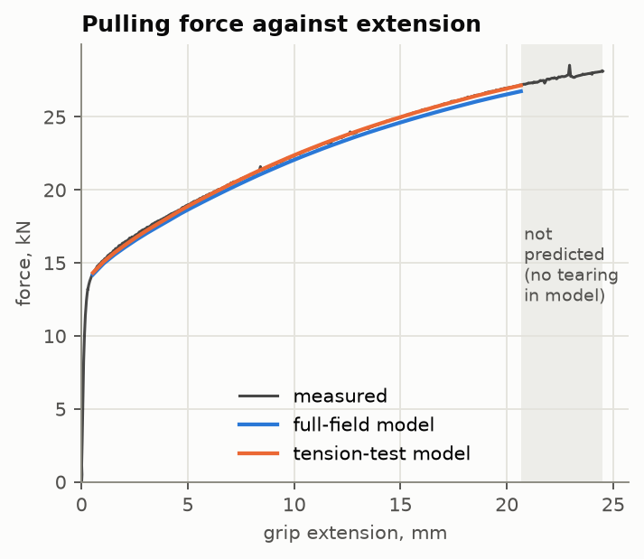

| Check | Allowed | Full-field model | Tension-test model | No plasticity at all |
|---|---|---|---|---|
| Force curve, average error | ≤ 5 % | 1.5 % pass | 0.3 % pass | — |
| Force at 90 % of the way to peak load | ±5 % | -1.5 % pass | -0.1 % pass | — |
| Strain map error at 30 % | ≤ 15 % | 7.2 % pass | 9.6 % pass | 38 % |
| Strain map error at 60 % | ≤ 15 % | 6.2 % pass | 8.1 % pass | 31 % |
| Strain map error at 90 % | ≤ 15 % | 5.9 % pass | 7.6 % pass | 31 % |
| Peak (hot-spot) strain | ±15 % | -1.0 % pass | -2.3 % pass | -31 % |
X-specimen, pulled along the rolling direction (orientation transfer, judged separately)
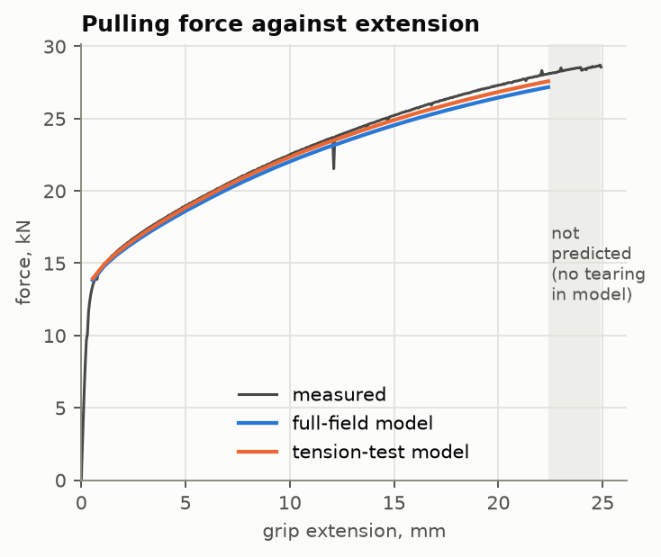
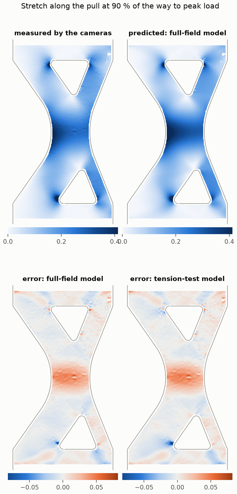
| Check | Allowed | Full-field model | Tension-test model | No plasticity at all |
|---|---|---|---|---|
| Force curve, average error | ≤ 5 % | 2.6 % pass | 1.3 % pass | — |
| Force at 90 % of the way to peak load | ±5 % | -3.3 % pass | -1.8 % pass | — |
| Strain map error at 30 % | ≤ 15 % | 7.2 % pass | 8.7 % pass | 38 % |
| Strain map error at 60 % | ≤ 15 % | 7.6 % pass | 8.3 % pass | 31 % |
| Strain map error at 90 % | ≤ 15 % | 8.6 % pass | 9.2 % pass | 30 % |
| Peak (hot-spot) strain | ±15 % | +3.8 % pass | +2.4 % pass | -29 % |
"No plasticity at all" is a deliberately wrong model given the same measured edge motion. It shows how much of the strain-map score comes for free from imposing that motion: not much — it is off by 30–40 % and misses the hot spot by 30–50 %.
Did the camera data buy anything?
| Question | Full-field model | Tension-test model |
|---|---|---|
| Force curve error, plate O15 | 0.74 % | 0.53 % |
| Force curve error, X-specimen | 1.53 % | 0.32 % |
| Strain map error (mean of three stages), plate O15 | 3.9 % | 6.6 % |
| Strain map error, X-specimen | 6.4 % | 8.4 % |
| Force at the last stage, X pulled along the rolling direction | -3.3 % | -1.8 % |
| Work to calibrate | two plate tests with cameras; about 8 minutes of simulation per fit | three tension tests; under a second |
For this steel the answer is: better strain maps, no better forces. 304L hardens smoothly and almost in a straight line at large strain, so extending the tension-test curve past where that test ends (plastic strain 0.47) is harmless, and the direction-dependence is mild. A material with a sharper change in hardening, stronger anisotropy or rate effects would be a harder exam for the baseline.
Checks on the solver itself
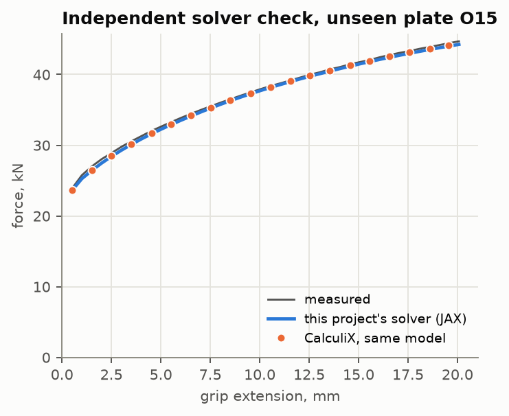
| Check | Allowed | Result |
|---|---|---|
| CalculiX re-run of the identified isotropic model on unseen plate O15: force curve | 2 % | 0.24 % pass |
| Same re-run: strain map near peak load | 3 % | 1.18 % pass |
| Finer mesh (about 4× the nodes): largest change in any held-out score | reported | 0.07 percentage points |
| Twice as many load steps: largest change in any held-out score | reported | 0.09 percentage points |
CalculiX has no direction-dependent yield model, so the cross-check covers the isotropic path. The direction-dependent part was checked against hand formulas instead (stress and sideways strain in simple tension, agreement to 9 digits or better).
Honest caveats
- The pass marks turned out generous. They were set before seeing any result (5 % on force, 15 % on strain maps) and every model beat them several times over. At half the tolerances the full-field model would still pass both primary shapes but not the rolling-direction X (2.6 % force, 8.6 % strain); the tension-test model would miss the X-specimen on strain (9.6 % at the first stage).
- The exam was not hard enough to separate the two methods. The plain tension-test model passes everything. "Full-field data is worth it" is not shown here for force prediction.
- The edge motion is an input. As is standard practice, the measured motion along two lines near the grips drives the simulation, for unseen shapes too. Force and interior strain are predicted; the overall stretch is not.
- No tearing. The model has no damage, so nothing past 90 % of the extension at peak load is predicted — not the peak load, not the failure.
- One direction learned, the other guessed wrong. All calibration plates were pulled across the rolling direction. The fitted direction-dependence then implies the steel is 3.5 % weaker along the rolling direction; separate tension tests (looked at afterwards, not graded) show it is 1–4 % stronger. That is why the full-field model is worse than the baseline on the rolling-direction X (-3.3 % vs -1.8 %), though still inside the limit.
- A residual 4–7 % strain-map error remains that no model form removed. Likely contributors, not separated here: camera smoothing near sharp strain peaks, as-cut versus nominal outline, the plane-stress idealisation where the sheet necks, and yield-surface shape beyond Hill's.
- Narrow scope. Slow, room-temperature tests of one sheet only. The fast tests (self-heating, rate effects), the D-shaped specimen and the fifth plate (O18, 15 GB) were not used.
- One pre-registration amendment, made before any fit: the rule for skipping spurious force drops was written backwards and was corrected. The elastic constants are textbook values from memory (the tension tests give 187–194 GPa against the 193 GPa used); changing them moves no score by more than 0.06 points.
- Optimiser trouble along the way: two warm-up runs were stopped because the optimiser crawled along a flat valley; fixed by fitting the curve's values instead of its constants. The six-number isotropic form ended at three different points from three starts.
Glossary
- DIC (digital image correlation)
- Cameras track a speckle pattern painted on the part and compute how every point moved — a strain map instead of a single gauge reading.
- Strain
- Stretch as a fraction of original length; 0.2 means 20 % longer.
- Plasticity, hardening
- Permanent deformation of metal, and the way it gets stronger the more it has been deformed. The "hardening curve" is yield stress against plastic strain.
- Anisotropy (Hill model)
- Rolled sheet behaves slightly differently along and across the rolling direction. Hill's model describes that with three extra numbers.
- Finite-element model updating
- Run a simulation of the test, compare with the measurement, adjust the material numbers, repeat until they agree.
- Held-out data
- Measurements kept unopened until the model is final, so the score cannot be tuned.
- Identifiability
- Whether the data can actually fix a number, or whether very different values fit equally well.
- CalculiX
- An independent open-source simulation program, used here to make sure a result is not an artefact of the agent's own solver.
Full record: experiments/2026-11-15-dic-plasticity-identification/ (README.md, PREREGISTRATION.md, log.md, metrics.json).